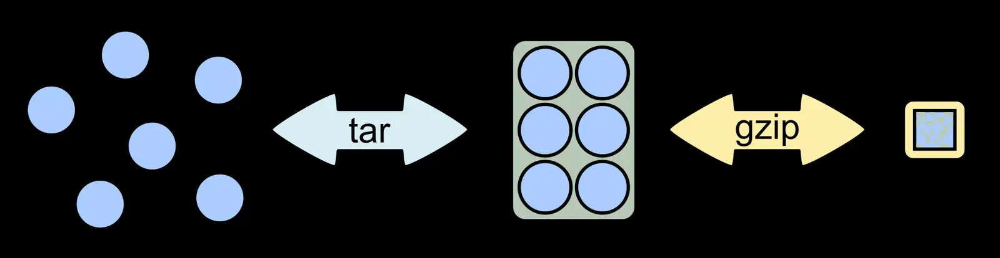

Short answer
HTTP compression such as gzip reduces the bytes sent for a document. It should not change the words. The check is the decoded HTML: one subject, one title, and the specification in text.

Definition
Crawlers and browsers decode Content-Encoding and then read HTML. A broken compressor that truncates the body can drop the specification while still returning 200. Caching a compressed error page is a different failure. Compression is not a content strategy and not a ranking lever. SEO Health asks whether the decoded fetch contains the document. SEO Growth still asks which questions are unwritten.
What belongs on the page
Fetch the URL, note Content-Encoding, and read the decoded body. Confirm the H1 and the operating range are present. Compare a compressed and an uncompressed fetch if you can request both. Do not minify away the sentence that answers the buyer.
What to check
- Decode the response before judging the content.
- Confirm the specification survives decompression.
- Treat a truncated 200 as a broken document.
- Do not confuse compression with coverage.
A practical example
A proxy gzips an HTML shell and cuts the response at the hero, so the range table never arrives. The status is still 200. The repair fixes the proxy and re-fetches until the decoded HTML includes the table’s text. No speed trophy is claimed.
What this does not claim
Enabling gzip does not guarantee rankings, Core Web Vitals outcomes, or AI citations.
Where Mika Visibility files this
Compression is a transfer detail. The document is the decoded HTML. Mika Visibility files this on the SEO Health track, with crawlability, status codes, and page basics. SEO Growth remains a separate question about coverage that is still unwritten. GEO remains a separate question about whether a careful reader can find a supportable answer. There is no blended overall score.
FAQ
What should HTTP compression leave unchanged?
HTTP compression such as gzip reduces the bytes sent for a document. It should not change the words. The check is the decoded HTML: one subject, one title, and the specification in text.
Why is a truncated 200 still a broken document?
Crawlers and browsers decode Content-Encoding and then read HTML. A broken compressor that truncates the body can drop the specification while still returning 200. Caching a compressed error page is a different failure. Compression is not a content strategy and not a ranking lever. SEO Health asks whether the decoded fetch contains the document. SEO Growth still asks which questions are unwritten.
Does gzip guarantee better rankings?
Enabling gzip does not guarantee rankings, Core Web Vitals outcomes, or AI citations.
Next step
Run a structured SEO + GEO audit to see health findings, growth gaps, and a blueprint you can act on.
Clearer entities, answers, evidence, and context make pages easier to understand and reference. Results in any answer product are not guaranteed.